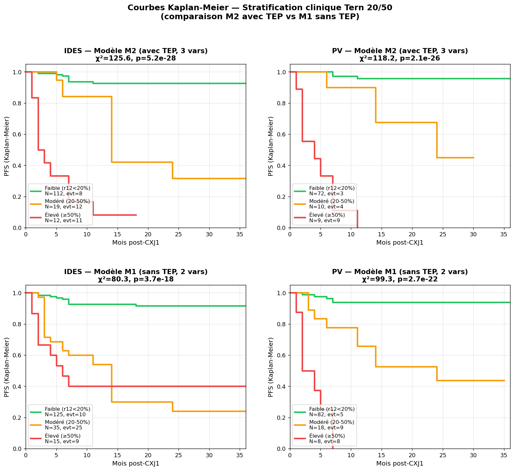
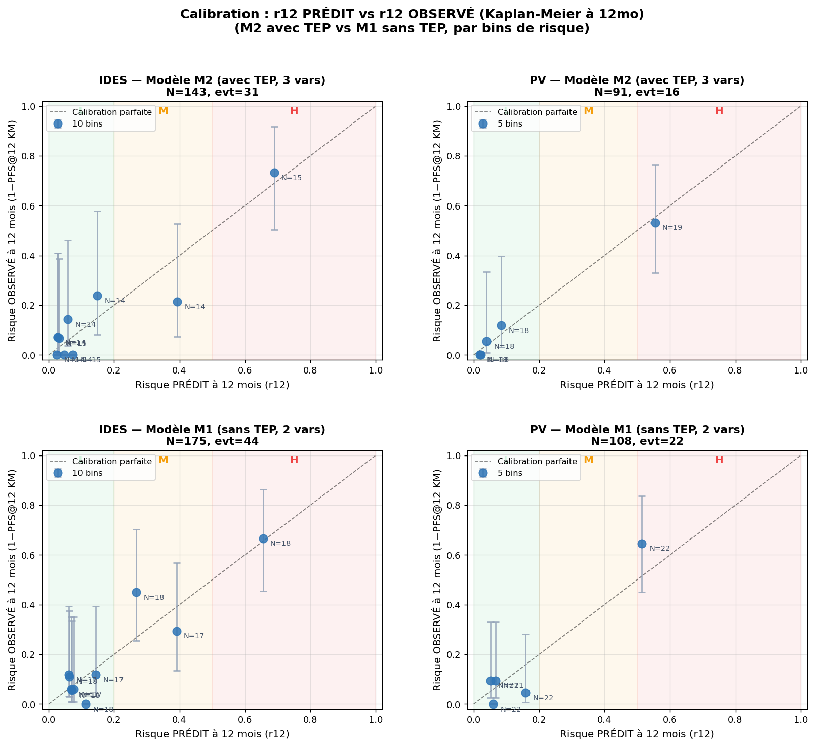

Le calculateur propose deux modèles Cox parallèles, fittés sur la même cohorte :
M2 (V15.130, 3 variables incluant TEP2) et M1 (V15.143, 2 variables sans TEP).
M1 est utilisé en fallback quand le TEP n'est pas disponible.
Métriques de performance
Métrique
M2 — avec TEP (V15.130)
M1 — sans TEP (V15.143)
IDES
PV
IDES
PV
N cohorte
143
91
175
108
Événements PFS
31
16
44
22
C-index (apparent)
0.859
0.928
0.786
0.826
C-index CV 5-fold
0.877
0.956
—
—
AIC partial
238.59
93.05
388.93
161.19
Baseline S0(12 mo)
0.920
0.932
0.861
0.880
Baseline S0(24 mo)
0.861
0.879
0.795
0.833
Coefficients Cox
Variable
Pipeline
Modèle
β
HR
p-value
score_v130
IDES
M2 (avec TEP)
+0.682
1.98
0.001
M1 (sans TEP)
+0.706
2.02
<0.0001
score_v130
PV
M2
+0.532
1.70
0.010
M1
+0.431
1.54
0.008
v5A_gated
IDES
M2
+0.604
1.83
<0.0001
M1
+0.451
1.57
<0.0001
v5A_gated
PV
M2
+1.270
3.56
<0.0001
M1
+1.008
2.74
<1e-6
TEP2_pos
IDES
M2 (uniquement)
+1.058
2.88
0.002
TEP2_pos
PV
M2 (uniquement)
+1.010
2.75
0.030
Lecture : Dans M1, les coefficients de score et v5A_gated sont légèrement plus forts qu'en M2,
car ils doivent partiellement compenser l'absence de TEP. Le ΔC-index entre les deux modèles est de
−0.07 IDES, −0.10 PV — la perte est réelle mais le modèle M1 reste cliniquement utilisable.
Trajectoires bi-exponentielles (V15.130)
Le score "joint bi-exp" compare la trajectoire VAF diag→CXJ1 du patient à deux trajectoires de référence
(bon vs mauvais répondeur), personnalisées par histologie (Hodgkin classique vs reste→DLBCL).
Formule : VAF(t) = f·exp(-λ₁·t) + (1-f)·exp(-λ₂·t).
Les seuils 20% et 50% du risque prédit r12 ont été choisis par exploration
exhaustive de 16 splits possibles (V15.132) — ils maximisent la séparation visuelle des 3 groupes
cliniques (Faible / Modéré / Élevé) et donnent le χ² de log-rank le plus discriminant tout en
préservant des effectifs raisonnables dans chaque branche.

Figure 1 : Courbes Kaplan-Meier de la PFS observée dans la cohorte de développement,
stratifiées par les zones cliniques Tern 20/50.
Haut : modèle M2 (avec TEP) ; bas : modèle M1 (sans TEP).
Les chiffres en légende donnent N et le nombre d'évènements PFS.
Statistiques par zone clinique (M2 — modèle principal)
Pipeline
Zone
N
Events
PFS@12 mo
PFS@24 mo
Médiane PFS
IDES
Faible (<20%)
112
8
92.7%
92.7%
non atteinte
Modéré (20-50%)
19
12
84.2%
31.6%
14 mois
Élevé (≥50%)
12
11
8.3%
8.3%
2 mois
PV
Faible (<20%)
72
3
95.7%
95.7%
non atteinte
Modéré (20-50%)
10
4
90.0%
45.0%
24 mois
Élevé (≥50%)
9
9
0.0%
0.0%
4 mois
Observation clinique majeure : Le groupe Modéré (20-50%) a un PFS@12 mo apparemment rassurant (84-90%)
mais chute drastiquement à PFS@24 mo (32-45%) — c'est le groupe des rechutes tardives entre 12-24 mois,
qui justifie pleinement la surveillance rapprochée.
Clarification du paradoxe "60% individuel vs 100% cohorte" :
Le groupe Élevé (≥50%) contient des patients avec r12 prédit entre 50% et 99%.
Le PFS@12 mo observé de 0-8% reflète la moyenne pondérée de ce bin (où le r12 médian peut atteindre 80-90%),
pas le risque individuel d'un patient à r12 = 60% qui reste à 60% (et a donc 40% de chance de ne PAS rechuter).
3. Calibration : risque prédit vs risque observé
Pour vérifier que le modèle Cox prédit correctement le risque à l'échelle agrégée,
on bin la cohorte par déciles/quintiles de r12 prédit, puis on compare la moyenne du r12 prédit
dans chaque bin (axe X) au risque observé en Kaplan-Meier à 12 mois (axe Y). Une calibration
parfaite alignerait les points sur la diagonale.

Figure 2 : Plot de calibration r12 prédit vs observé (Kaplan-Meier @12 mo, intervalles de confiance 95%).
Haut : M2 (avec TEP) ; bas : M1 (sans TEP). Les zones colorées correspondent aux trois zones cliniques.
Verdict de calibration : Pour les deux pipelines et les deux modèles, le bin le plus haut
(Élevé) montre une calibration quasi-parfaite (point quasi sur la diagonale, 73% observé pour 70% prédit IDES ;
53% observé pour 55% prédit PV). Les bins intermédiaires sont dans les IC à 95% — pas de sur/sous-prédiction systématique.
Le modèle Cox est cliniquement utilisable pour identifier les patients à haut risque.
4. Tests d'ajout de scores baseline (IPI, Hasenclever)
Test d'hypothèse : les scores pronostiques baseline (IPI pour DLBCL, Hasenclever/IPS pour Hodgkin)
apportent-ils de l'information supplémentaire une fois que ctDNA + TEP sont dans le modèle ?
4.1 IPI (cohorte avec IPI documenté)
Pipeline
N (avec IPI)
Events
M2 (V15.130) C-index / AIC
M2+IPI C-index / AIC
LR test IPI
IDES
55
16
0.837 / 103.70
0.853 / 103.73
χ²=1.97, p=0.161 ❌
PV
40
12
0.886 / 62.26
0.895 / 63.28
χ²=0.98, p=0.322 ❌
4.2 Hasenclever (cohorte Hodgkin classique)
Pipeline
N (avec IPS)
Events
M2 C-index / AIC
M2+IPS C-index / AIC
LR test IPS
IDES
77
14
0.847 / 92.3
0.854 / 94.2
χ²=0.07, p=0.79 ❌
PV
43
3
0.982 / 15.3
1.000 / 16.0
χ²=1.25, p=0.26 ❌
Conclusion forte : Aucun des deux scores baseline (IPI pour DLBCL, Hasenclever pour Hodgkin)
n'apporte d'information pronostique additionnelle quand ctDNA + TEP sont déjà dans le modèle (tous p > 0.15).
L'AIC augmente même avec leur ajout (pénalité > gain log-likelihood).
La réponse moléculaire et métabolique à mi-traitement écrase le pronostic baseline.
Caveat statistique : Les cohortes restreintes aux patients avec score baseline documenté
sont plus petites (N=40 à 77 selon test), réduisant la puissance. Cependant, les effets observés
(ΔC-index ≤ 0.02) suggèrent une absence d'effet clinique pertinent même avec plus de puissance.
Mesure le décollement de la trajectoire VAF observée (diag → CXJ1) par rapport à la trajectoire
de référence des bons répondeurs (vs mauvais répondeurs), ajustée par histologie. Plus le score est élevé,
plus la trajectoire ressemble à un mauvais répondeur.
Capture la "dose" de signal MRD résiduel sur les drivers oncogéniques (panel D11 : BCL2, BCL6, BCL7A, BTG2,
CIITA, CXCR4, IRF8, MYC, PAX5, S1PR2, TP53). Le multiplicateur quali_patient (0 ou 1) annule
le signal si la qualité technique du suivi est insuffisante.
Variable 3 — TEP2_pos
Binaire : 1 si Deauville ≥ 4 à la TEP interim cycle 2, 0 sinon.
Variable la plus discriminante dans M2 (HR ≈ 2.8 IDES / 2.7 PV).
Quand TEP indisponible, le modèle M1 (2 vars) prend le relais avec un C-index 0.79 / 0.83.
6. Limites & disclaimer
Cohorte unique de développement — Aucune validation externe à ce jour.
Les métriques rapportées (C-index apparent, AIC) reflètent la performance sur la même cohorte que celle qui a servi au fit.
La C-index CV 5-fold (0.88 / 0.96) est plus représentative.
Limité à 12 mois — La dynamique précoce du ctDNA n'a pas été validée pour prédire
les rechutes tardives (au-delà de 24 mois). Le risque r12 est l'estimation la plus fiable ;
r24 est extrapolé via la baseline survival du Cox.
Pipelines spécifiques au laboratoire — Les variables score (basée sur trajectoires bi-exp
propres) et v5A_gated (panel D11 propre) ne sont pas universelles. Une adaptation est nécessaire pour
d'autres pipelines de séquençage.
Histologie binaire — Le modèle distingue uniquement Hodgkin classique vs reste→DLBCL.
Les histologies rares (PMBL, HGBL, transformations) sont assignées au profil "DLBCL" par défaut.
Calibration extrême — Aux extrêmes du r12 (très bas ou très haut), les IC sont larges
et la calibration peut diverger. Le calculateur affiche un warning "Calibration locale divergente"
quand le KM des K voisins diffère du r12 prédit de plus de 20 points.
⚠ Disclaimer clinique — Ce calculateur est un prototype de recherche
destiné à la discussion académique et méthodologique. Il n'est pas un outil de décision clinique validé
et ne doit pas être utilisé pour la prise en charge individuelle d'un patient sans évaluation indépendante
par un médecin spécialiste hématologue.